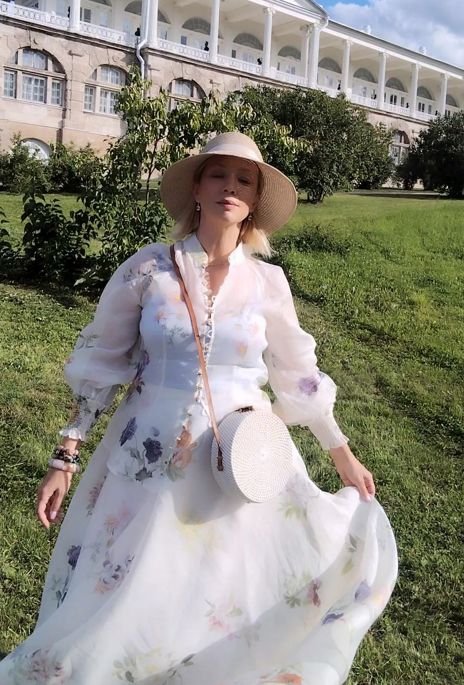

Закрыть сделку до обеда. Решить вопрос, который другие решали бы неделю. Помнить про кружки детей, платежи, подарки и дедлайны - одновременно.
Отпуск - и через три дня ты уже «только проверяешь чаты». Выходной - и в голове список на понедельник. Вечер - и вместо тишины ты прокручиваешь разговор с клиентом.
Со стороны - успешная, собранная, красивая. А внутри - как будто кто-то тихо приглушил свет.
Если узнала себя - это письмо тебе.
Мы не стали слабее. Мы просто разучились выключаться. И когда работа становится тем, кто ты есть, любая пауза ощущается как угроза.
Самая дорогая вещь, которую может позволить себе женщина, - не сумка и не отель с видом на океан.
Проснуться без тревоги. Выпить кофе, не хватаясь за телефон. Позволить мужчине решить вопрос - и не перепроверять. Отдыхать без чувства вины.
А мы годами делаем наоборот: напрягаемся сильнее - и удивляемся, почему результата всё меньше, а усталость всё дороже.
Отметь то, что узнаёшь. Честно, не «как должно быть».
Ты умеешь выключаться и возвращаться к себе. В твоём темпе это редкий дар - береги его.
Ты берёшь силы взаймы у себя будущей. Пока хватает - но проценты уже капают: раздражение, пустота, тело.
Ты платишь за успех собой - и платишь слишком много. Дело не в графике. Дело в состоянии.
Отметила 4 и 5? Если пауза вызывает стыд, а на вопрос «чего ты хочешь?» нет ответа - это уже не усталость. Это потерянный контакт с собой.
Роли - как наряды в шкафу: надела, сняла. Беда начинается, когда срастаешься с одной ролью намертво - и уже не помнишь, кто ты без неё.
Не «отдохну, когда всё сделаю» - такого дня не будет. Расслабляться - это навык, а не редкая случайность. Его тренируют каждый день.
Если год за годом всё улучшается на 1-5% - ты застряла. Держит эмоциональная память: страх, старый опыт с деньгами. Пока заряд не снят, тело живёт в режиме тревоги.
Значит, ты переплачиваешь. И выйти из этого проще вдвоём - с тем, кто видит твой сценарий со стороны.
Личная встреча со мной на 20 минут. Разберём, куда уходит твоя энергия, что держит напряжение и с чего начать возвращать себе лёгкость.